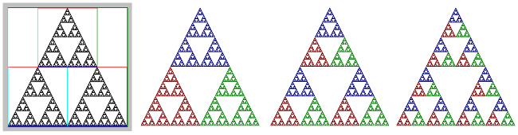

Chaos Game
|
About the Chaos Game
The Chaos Game is a way of making visualizations of self-similar fractals in the plane, using a random process. A self-similar fractal in this context is a geometric object that is a union of several copies of itself. The copies can be shrunk in one or both directions. They can be rotated. And they can be sheared (that is, tilted). If you think of one of the small copies as a "map" of the full image, then the fractal is completely specified by the maps. In the Chaos Game program, the maps are shown like this:
A map can be applied to any point in the big white square to produce a new point that is inside the small quadrilateral that defines the map. (In fact, a map can be applied to any point in the plane, not just to points in the big white square.)
To create an image of the fractal, the Chaos Game program starts with a blank image and continuously adds new points to the image. To produce each point, it uses the following random process: Start with a random point in the big square. Pick one of the maps at random, and apply it to the point, producing a new point. Again, pick one of the maps at random, and apply it to the new point, producing a third point. And repeat this step—pick a random map and apply it to the point produced by the previous step—for a total of one hundred steps. The final point that is produced in the one-hundredth step is then added to the image. (All the points from the previous steps are discarded.)
This process works because as the point is transformed again and again, it is "attracted" to the fractal. The final point might not lie exactly on the fractal, but it will usually be very close. What you see on the screen is an approximation for the true fractal, both because the process only produces a point that is close the true fractal, and because the image on the screen is made up of small pixels rather than the infinitesimal points that make up the true fractal. (In some cases, the one hundred steps that are used in this program might not be enough to produce a good approximation. For an example, look closely at the center of the "Spiral" example.)
Using the Program
First of all, note that the program works best when run in a fairly large window using a mouse. However, it should also mostly work with touch screens.
You might want to start by looking at some of the examples, using the pop-up menu labeled "Load Example" near the bottom of the controls. When you select an example, the maps that define that example are shown, and the program immediately starts generating points and adding them to the fractal image.
You can modify the maps. To edit a map, just click on it to select it for editing. A gray overlay will be drawn on the map, and some control widgets will be added. You can modify the selected map by dragging any of the control widgets, by dragging the colored sides of the map, or by dragging the map itself. While you are dragging, every time the map changes, the fractal also changes and the program clears the old image and starts adding points to the new image.
If you click outside all of the maps, then the selection will be turned off, allowing you to see the fractal better.
When you move your mouse over the selected map, the cursor changes. When over one of the sides of the map or over one of the widgets along the sides, the cursor should show, approximately, the direction in which you can drag the item. When over the rotation handle, the cursor is a crosshair.
Note that you can drag a side or corner of the map through the center of the map and to the other side. This has the effect of flipping the map over.
One of the controls is a checkbox that says "Symmetric dragging." This requires a bit of explanation. When this box is checked, then as you drag a corner, the opposite corner also moves to make the motion symmetric about the center of the map. When you drag a corner while the box is unchecked, the opposite corner doesn't move. The same is true when you drag a side of the map or one of the arrows that lie along the sides.
If you hold down the shift key as you start dragging the map as a whole, the motion of the map is restricted to be horizontal only or vertical only. If you hold down the shift key as you drag the rotation handle, the change in angle is restricted to be a multiple of 15 degrees.
You can actual make a map that is bigger than the unit square. Such maps don't make fractals. The program won't stop you from doing that, but don't expect to get a nice image!
In the middle of the set of controls, there is a list of maps. They are named simply "Map Number 1", "Map Number 2", and so on. The name of the currently selected map, if any, has a blue background. You can select a map by clicking its name in the list. There is a button for deleting the selected map.
There is also an "Add Map" button. A popup menu controls how big the new map will be. The new map is always added in the center of the image, and it is automatically selected so that you can starting editing it.
As soon as there are two maps, the program starts generating points for the fractal, and it will continue doing so indefinitely. Sooner or later, all the new points that are being generated will be duplicates of existing points, and the image will stop changing. However, the program will continue to generate points, wasting computing time. If that bothers you, click the "Stop Running" button to terminate the process. When you make any change to the maps, the process will start up again.
Note that there are "Undo" and "Redo" buttons that let you undo/redo any action that modifies the maps, including Clear and Load Example, as well as editing, adding, and deleting maps.
About Color Coding
There is a "Color Coding" popup menu near the top of the controls. The default value is "None", but you can change the menu to use a color coding level between 1 and 5. When you change to one of the levels, the program will draw fractals in color. The colors are meant to help you understand the structure of the fractal and how an image is created by the program.
Here is an example. The image on the left is the Sierpinski Triangle example with no color coding and with the outlines of the maps shown. The next three images show the triangle (without the maps), with the color coding level set to Level 1, Level2, and Level 3 respectively:

Level 1 is easiest to understand. A Sierpinski Triangle is made up of three half-sized copies of itself. Color level 1 simply assigns a different color to each of those smaller copies. For Level 1, a point is colored based on the map that it ends up in. Remember that to make a point in the fractal, the program starts with a random point and transforms it by a random sequence of maps. Only the final point is drawn. For Level 1 color coding, the color of the point that is drawn simply corresponds to the last map that was applied to the point. For Map Number 1, the color is red; for Map Number 2, the color is green, and for Map Number 3, the color is blue.
For Color Level 2, the color of a point corresponds the the next-to-last map that was applied to the point. The color tells you where the point was just before the last map was applied. Similarly, for Color Level 3, the color corresponds to the map that was applied next-to-next-to-last, and it tells where the point was two steps before the end. This extends in the obvious way to color levels 4 and 5.
But it's easier to say what the image looks like: The Sierpinski image for Color Level 2 consists of three half-size copies of the image for Color Level 1. This lets you see how the complete triangle is made up of nine quarter-sized copies of itself. Similarly, the Level 3 image consists of three half-sized copies of the Level 2 image.
When you apply color coding to more complex fractals, you need to remember that the reduced size copies of the complete image can be shrunk by different amounts in two directions and can be distorted by tilting. But it works basically the same.
Saving Your Work
Note that in some web browsers, you can right-click the fractal image to get a pop-up menu that allows you to save the image to a file. The menu might also let you view the image on a separate web page, and you can save it from there if you want.
It might be more useful to save the data that define the maps for a fractal. That way, you can reload the data back into the program at a later time. A web app can't work directly with files, but the program does have a somewhat clunky way to save and load data.
Click the button named "Show Import/Export Dialog," at the bottom of the program's controls. This will pop up a dialog box with a text area, several new buttons, and some brief instructions.
To save your work, click the button named "Grab Current Example." The data for the current fractal will be shown in the text area. (The button is disabled if there is no current fractal in the program.) To save the data, select it the text, copy-and-paste it into some text editor program, and save the data into a file from there. You can dismiss the dialog by clicking the "Cancel" button.
To reload the data into the program, open the saved data file in a text editor, select the text, and copy it. In the Chaos Game program, open the same dialog by clicking the "Show Import/Export Dialog" button. Paste the example text into the text area, and hit the "Apply" button. The dialog will close and the fractal will be loaded into the program.
You do not need to understand the format of the data, if you just want to be able to reuse it later. But you if are interested, here is how it works...
A single map is defined by a list of six numbers. The list must be enclosed between square brackets ("[" and "]"), and the numbers must be separated by commas. The data for a fractal consists of the lists for all of the maps that define the fractal; those lists are enclosed between square brackets and separated by commas. The data is a "list of lists." There can be spaces and line feeds in the data, but they are ignored by the program.
The six numbers that define a map have the following meaning: The big white square in the program is the "unit square." In terms of (x,y) coordinates, the lower left corner of the square is (0,0), the lower right corner is (1,0), the upper left corner is (0,1) and the upper right corner is (1,1). To define a map, you just have to say how the map transforms the points (0,0), (1,0), and (0,1). That is, where do those three points go when the map is applied to them? (What happens to any other point, including (1,1) is determined by what happens to those three points.) In the data for the map, the first two numbers are the coordinates of the point to which (0,0) is mapped; the third and fourth numbers are the coordinates of the point to which (1,0) maps; and the fifth and sixth numbers are the coordinates of the point to which (0,1) maps.
Here, for example, is the data for the Sierpinski Triangle:
[
[ 0, 0,
0.5, 0,
0, 0.5 ],
[ 0.5, 0,
1, 0,
0.5, 0.5 ],
[ 0.25, 0.5,
0.75, 0.5,
0.25, 1 ]
]
For the first map, (0,0) is mapped to itself, (1,0) is mapped to (0.5,0), and (0,1) is mapped to (0,0.5). This maps the entire unit square to a half-sized square that is in the lower left quadrant of the unit square. The other maps are similar
You can even edit the map data by hand if you want! The numbers don't have to be in the range zero to one, but they should not be very far outside that range.
Exercises
Here a few images that can be made using the program. Each of these examples is a fairly simple modification of either the Sierpinski Triangle or the Sierpinski Carpet. Start with those examples, and try to make to make these fractals! Then, of course, you can try to design your own fractals from scratch.